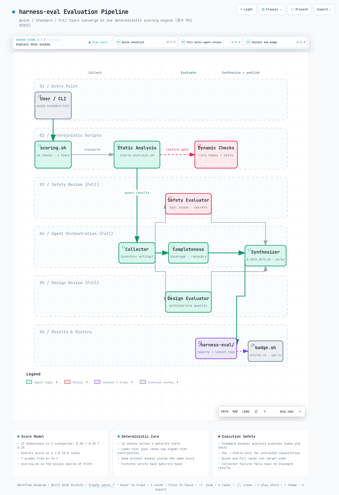

01문제 정의 - 하네스 품질을 측정할 수단이 없다
좋은 도구도 설정이 엉망이면 제 역할을 못 합니다. 이 절은 Claude Code의 설정 품질을 왜 따로 측정해야 하는지부터 짚습니다.
Claude Code를 팀 규모로 쓰기 시작하면 프로젝트마다 .claude/ 디렉토리에 설정 파일이 쌓입니다. 훅(특정 이벤트에 자동 실행되는 스크립트), 스킬, 커맨드, 에이전트, CLAUDE.md가 그것입니다. 이 구성 전체를 하네스(harness, Claude Code의 동작을 제어하는 설정 계층)라고 부릅니다.
문제는 하네스에 품질을 판정할 표준 도구가 없다는 점입니다. 애플리케이션 코드에는 린터와 테스트가 있지만 하네스에는 그런 안전망이 없습니다.
고장은 조용히 숨어 있습니다. 훅 스크립트에 문법 오류가 있어도, settings.json에 등록된 훅 파일이 실제로 없어도 세션은 겉보기에 정상 동작합니다. deny 목록(위험한 명령을 차단하는 금지 목록)이 아무 명령도 막지 못해도 마찬가지로 문제가 드러나지 않습니다.
harness-eval은 이 공백을 겨냥한 Claude Code 플러그인입니다. 하네스를 5개 구성 요소로 나누어 서로 다른 관점으로 검사합니다. 그리고 결과를 하나의 점수와 등급으로 종합합니다.
아래 표에서는 무엇이 평가 대상인지, 그리고 각 요소를 어떤 관점으로 보는지를 확인하면 됩니다.
| 구성 요소 | 제어 방식 | 평가 관점 |
|---|---|---|
| Hooks (settings.json + .claude/hooks/) | 이벤트 기반 자동 트리거 | 정확성, 안전성, 커버리지 |
| Skills (.claude/skills/) | 역할 수행 방법 지시 | 실행 가능성, 구체성 |
| Commands (.claude/commands/) | 반복 작업 자동화 | 완전성, 에러 복구 |
| Agents (.claude/agents/) | 독립 병렬 분석 | 출력 스키마, 도구 범위 |
| CLAUDE.md (루트 + 모듈별) | 프로젝트 컨텍스트 | 정확성, 최신성, 실행 가능성 |
harness-eval이 채점하는 대상은 코드 자체의 품질이 아니라 Claude Code를 제어하는 설정 계층의 품질입니다. 같은 코드베이스라도 훅과 권한 설정이 부실하면 낮은 점수를, 테스트와 deny 목록이 갖춰져 있으면 높은 점수를 받습니다.
02동작 원리 - 3단계 평가 구조
평가를 매번 깊게 할 필요는 없습니다. 이 절은 상황에 맞게 고를 수 있는 세 가지 평가 모드와 그 사이의 관계를 설명합니다.
harness-eval의 핵심 설계는 평가 깊이와 소요 시간을 사용자가 맞바꾸게 하는 3-tier 구조입니다. 빠른 체크리스트(Quick), 정적 분석과 동적 분석(Standard), 멀티 에이전트 종합 리뷰(Full)가 각각 별도의 스킬과 슬래시 커맨드로 노출됩니다. 여기서 정적 분석은 코드를 실행하지 않고 파일만 검사하는 방식이고, 동적 분석은 실제로 실행해 보는 검사입니다.
각 모드는 얼마나 걸릴까요? Quick은 약 30초, Standard는 약 2~3분, Full은 약 5~10분이 걸리고, 세 모드 모두 같은 1.0~10.0 척도와 등급 체계로 수렴합니다. 이 표에서는 소요 시간과 함께 각 모드가 대상 프로젝트의 코드를 실제로 실행하는지를 눈여겨보면 됩니다.
| 모드 | 커맨드 | 소요 시간 | 방법 | 대상 코드 실행 |
|---|---|---|---|---|
| Quick | /harness-eval:quick | 약 30초 | 체크리스트 기반 채점 (scoring.sh) | 없음 |
| Standard | /harness-eval:standard | 약 2~3분 | 정적 분석 + 동적 분석 (훅, 테스트 실행) | 있음 (확인 게이트) |
| Full | /harness-eval:full | 약 5~10분 | 5개 에이전트 병렬 리뷰 + 12차원 종합 | 직접 실행 없음 (결정론적 스크립트 + read-only 에이전트) |
세 모드는 별도 구현이 아니라 계층적으로 포개져 있습니다. Standard는 Quick의 채점 엔진 위에 static-analysis.sh(bash 문법, JSON 유효성, 파일 권한, 훅 등록 일관성 검사)와 동적 분석을 얹습니다. Full은 Standard의 결과를 수집 단계 입력으로 받아 그 위에 에이전트 리뷰를 얹습니다.
채점의 정본(single source of truth, 값이 어긋날 때 기준이 되는 단일 원본)은 어느 모드든 scripts/scoring.sh 하나입니다. 그래서 모드 간 등급이 서로 다른 기준으로 매겨지는 일이 없습니다.
비교 전용 모드인 /harness-eval:compare는 새 평가를 수행하지 않습니다. 저장된 이력에서 최신 결과와 직전 결과의 델타(차이)를 계산합니다. 이력 메커니즘은 5절에서 다룹니다.
03점수 체계 - 12차원, 16개 체크, 7단계 등급
점수가 어떻게 만들어지는지 모르면 점수를 믿기 어렵습니다. 이 절은 점수와 등급이 계산되는 과정을 단계별로 살펴봅니다.
v0.2.0부터 평가 모델은 12개 차원을 3개 카테고리로 묶는 가중 평균 하나로 통일되었습니다. v0.1.0 시점의 framework 문서는 6차원 모델을 기술했는데, Full 모드 종합기(agents/synthesizer.md)는 다른 모델을 쓰는 표류가 있었습니다. 0.2.0에서 둘을 12차원 정본으로 일치시켰습니다.
3.1 12개 차원과 카테고리 가중치
이 표에서는 어떤 차원이 어느 카테고리에 속하는지, 그리고 기본 품질에 가중치의 절반이 실린다는 점을 보면 됩니다.
| 카테고리 | 가중치 | 차원 |
|---|---|---|
| 기본 품질 (Basic Quality) | 0.50 | 정확성, 안전성, 완전성, 일관성 |
| 운영 (Operational) | 0.25 | 실행 가능성, 검증 가능성, 비용 효율성, 계약 기반 테스트 |
| 설계 품질 (Design Quality) | 0.25 | 에이전트 커뮤니케이션, 컨텍스트 관리, 피드백 루프 성숙도, 진화 가능성 |
왜 기본 품질에 절반을 줄까요? framework 문서는 그 근거를 "하네스가 틀리거나 안전하지 않으면 나머지가 무의미하다"라고 명시합니다.
카테고리 안에서 각 차원은 동일 가중으로 산술 평균됩니다. 세 카테고리 평균이 0.50 / 0.25 / 0.25로 합산되어 소수 첫째 자리로 반올림됩니다.
3.2 Quick / Standard의 체크리스트 채점
Quick과 Standard 모드는 12차원 점수를 직접 매기지 않습니다. 대신 templates/checklist.json에 정의된 4개 성숙도 tier, 총 16개 체크 항목의 통과 비율을 tier별 가중치로 합산해 같은 척도로 환산합니다.
이때 하위 tier의 통과 비율이 상위 tier의 기여를 감쇠(cap, 상한을 걸어 깎는 것)시킵니다. 기초가 부실하면 상위 항목을 채워도 점수가 오르지 않는 구조입니다.
체크 항목은 파일 존재, glob 매칭(파일 이름 패턴 검사), JSON 필드 존재, grep 패턴(텍스트 패턴 검색) 같은 결정론적 검사입니다. 결정론적이라는 말은 같은 입력에 항상 같은 결과가 나온다는 뜻입니다. 그래서 같은 프로젝트에는 항상 같은 점수가 나옵니다.
이 표에서는 tier가 올라갈수록 가중치와 요구 수준이 함께 높아진다는 점을 보면 됩니다.
| Tier | 가중치 | 항목 수 | 대표 항목 |
|---|---|---|---|
| basic (6.0+) | 1.0 | 4 | CLAUDE.md 존재, settings 존재, 훅 1개 이상, 커맨드 1개 이상 |
| functional (7.0+) | 1.5 | 4 | PreToolUse / PostToolUse 등록, 시크릿 스캐닝 훅, 스킬 2개 이상, 에이전트 1개 이상 |
| robust (8.0+) | 2.0 | 5 | 자동화 테스트, 커맨드 에러 복구 섹션, 에이전트 출력 스키마, deny 목록, 모듈 CLAUDE.md 2개 이상 |
| production (9.0+) | 2.5 | 3 | E2E / 통합 테스트, CI/CD 파이프라인, 마이그레이션 가이드 |
overall = (weighted_sum / total_weight) * 9.0 + 1.0 # 범위 1.0~10.0
# 등급 매핑 (단일 정본)
s >= 9.5 A+ s >= 8.0 B+ s >= 6.0 C
s >= 9.0 A s >= 7.0 B 그 외 F
s >= 8.5 A-등급은 A+, A, A-, B+, B, C, F의 7단계입니다. 이 임계값의 정본은 scripts/scoring.sh입니다. synthesizer 에이전트와 프레임워크 문서의 복제본은 이를 따르도록 명시되어 있고, Full 모드와 배지 생성기도 모두 이 값을 따릅니다.
0.2.0 이전에는 Full 모드가 별도의 등급표를 갖고 있어 모드 간 등급이 어긋날 수 있었습니다. 이것이 0.2.0에서 수정된 결함 중 하나입니다.
그러면 채점기 자체가 맞게 채점하는지는 어떻게 확인할까요? tests/fixtures/의 4단계 성숙도 모의 프로젝트(minimal, functional, robust, production)로 검증합니다. 각 픽스처가 의도한 점수 구간에 떨어지는지를 24개의 scoring 테스트가 확인합니다.
여기에 중첩 스키마 회귀용 nested-hooks-project 픽스처가 별도로 추가되어 있습니다.
원칙: 정량 검사(스크립트)가 점수의 뼈대를 만들고, 정성 리뷰(에이전트)는 그 위에서만 가감합니다. 등급표와 점수 척도의 정본은 scoring.sh 하나입니다.
04Full 모드 - 5개 에이전트 병렬 리뷰
자동 검사만으로는 잡지 못하는 품질도 있습니다. 이 절은 여러 AI 리뷰어가 역할을 나눠 함께 평가하는 Full 모드의 동작을 설명합니다.
Full 모드는 grep으로 잡을 수 없는 품질을 평가합니다. 도구 범위가 실제로 최소 권한인지, 에이전트 간 핸드오프(작업 인계)가 명확한지 같은 설계 품질이 그 대상입니다.
이를 위해 5개 서브에이전트(본체와 별도로 도는 보조 AI 작업자)를 3개 페이즈로 오케스트레이션(순서에 맞게 지휘)합니다. 스킬(skills/full/SKILL.md)이 오케스트레이터 역할을 맡습니다. 각 에이전트는 Claude Code의 Task 도구로 디스패치됩니다.
- Phase 1 수집(순차) - static-analysis.sh와 scoring.sh를 실행해 정량 결과를 얻습니다. collector 에이전트가 이를 참조해 프로젝트 인벤토리 아티팩트를 만듭니다.
- Phase 2 병렬 평가 - safety-evaluator(도구 범위, 시크릿 안전성), completeness-evaluator(커버리지, 에러 복구), design-evaluator(아키텍처 품질)가 같은 아티팩트를 입력으로 동시에 평가합니다.
- Phase 3 종합 - synthesizer가 세 평가자의 점수를 3.1절의 가중 공식으로 합산하고, 영어 / 한국어 이중 언어 리포트를 생성합니다.
페이즈 사이의 결합을 끊는 폴백(실패 시 대체 경로) 설계가 눈에 띕니다. collector가 실패하면 Phase 2와 3을 통째로 건너뛰고 Standard 결과만으로 리포트를 냅니다. 이때 리포트에 폴백 사실을 명기합니다.
정적 분석의 카테고리별 점수(categories.*.score)는 체크가 없는 카테고리에서 null로 내려옵니다. 스킬 지시문은 이 경우 "값을 지어내지 말라"고 명시합니다.
0.2.0 이전에는 5개 에이전트 전부가 프론트매터(파일 머리의 설정 블록)에 allowed-tools 필드로 도구를 제한하고 있었습니다. 그런데 서브에이전트에서 이 필드는 무시되고, 올바른 필드는 tools입니다. 즉 도구 제한이 전혀 걸리지 않은 상태였습니다.
하네스 평가 도구 자신이 하네스 결함을 갖고 있었던 사례입니다. 0.2.0에서 수정되었습니다.
05이력 추적, 비교, 배지
점수는 한 번 재고 끝나면 의미가 없습니다. 이 절은 평가 결과를 쌓아 두고, 비교하고, 배지로 보여 주는 부가 기능을 다룹니다.
harness-eval은 평가 결과를 대상 프로젝트의 .harness-eval/ 디렉토리에 누적합니다. 리포트 파일은 .harness-eval/reports/eval-{날짜}-{순번}-{모드}-{en|ko}.md 규칙으로 저장됩니다. 최신 점수는 latest.json에 기록되어 배지 생성기와 이력 관리자가 함께 소비합니다.
5.1 history.sh - save / list / compare
scripts/history.sh는 save, list, compare 3개 서브커맨드를 제공합니다. compare는 기본적으로 최신 평가와 직전 평가를 비교합니다. 종합 점수 델타, 등급 변화, tier별 통과 항목 델타를 JSON으로 반환하고, --eval-id로 특정 이력을 비교 기준으로 지정할 수도 있습니다.
/harness-eval:compare 스킬은 이 출력을 받아 추세와 다음 등급 도달 전망을 표로 정리합니다. 이력이 2건 미만이면 비교 불가를 안내합니다.
5.2 badge.sh - 점수를 README 배지로
scripts/badge.sh는 latest.json의 점수를 읽어 A+~F 등급 배지를 Markdown 블록으로 생성합니다. 블록에는 shields.io(배지 이미지를 만들어 주는 서비스) 배지 URL이 들어가고, 배지 이미지는 shields.io가 SVG로 서빙합니다. 플러그인 훅(hooks/hooks.json의 Stop 이벤트에 등록된 post-eval-badge.sh)이 평가 세션이 끝날 때 배지 생성을 트리거합니다.
다만 README 파일에 배지를 자동으로 써넣는 동작은 opt-in(명시적으로 켜야 동작하는 방식)입니다. HARNESS_EVAL_AUTO_BADGE=1 환경변수 또는 .harness-eval/config.json의 autoBadge:true가 있을 때만 README를 수정합니다.
0.2.0 이전에는 세션 종료마다 조용히 README를 고쳤습니다. 사용자 파일을 묵시적으로 수정하는 훅은 그 자체가 하네스 안티패턴이라 opt-in으로 바뀌었습니다.
06실제 사용 흐름
이제 직접 설치해서 돌려 볼 차례입니다. 이 절은 설치 명령과 권장 사용 사이클을 안내합니다.
사전 요구 사항은 Bash 4+, jq 1.6+, Python 3.6+, Git, Claude Code CLI입니다. 설치는 마켓플레이스 등록과 플러그인 설치 두 단계입니다.
claude plugin marketplace add https://github.com/whchoi98/harness-eval
claude plugin install harness-eval@harness-eval
# Claude Code 세션 안에서
/harness-eval:quick # 체크리스트 채점 (~30초)
/harness-eval:standard # 정적+동적 분석 (~2-3분)
/harness-eval:full # 멀티 에이전트 리뷰 (~5-10분)
/harness-eval:compare # 직전 평가와 비교Claude Code 없이 채점 엔진만 쓸 수도 있습니다. 스크립트는 stdout에 JSON을 내보내므로 CI 파이프라인(코드가 바뀔 때마다 자동으로 도는 검증 절차)에 그대로 끼울 수 있습니다.
HARNESS_EVAL_ROOT=$(pwd) bash scripts/scoring.sh /path/to/target-project --mode quick
# {"mode":"quick","scores":{"overall":7.2,"grade":"B"},"checklist":{...},...}
HARNESS_EVAL_ROOT=$(pwd) bash scripts/history.sh /path/to/target-project list
# [{"id":"eval-2026-04-06-001","mode":"quick","overall":7.2,"grade":"B"}]Standard 모드의 동적 분석 단계는 대상 프로젝트의 .claude/hooks/ 스크립트와 테스트 스위트를 사용자의 머신에서 실제로 실행합니다. 스킬이 실행 전 명시적 확인 게이트를 거치지만, 신뢰할 수 없는 저장소를 평가할 때는 --static-only(또는 --no-dynamic)로 정적 분석과 채점만 수행하세요.
Quick 모드와 Full 모드는 대상 코드를 직접 실행하지 않습니다. README는 이 경고를 Standard와 Full 모두에 걸어두지만, Full 스킬 구현에는 동적 분석 단계가 없습니다.
권장 사이클은 framework 문서 6절에 명시되어 있습니다. 초기 평가 후 치명적 문제를 수정하면 즉시 재평가합니다. 이후에는 주요 기능 추가 후와 버전 릴리스마다 재평가합니다.
실제로 점수는 얼마나 오를까요? 저장소 자체의 실측 수렴 기록으로는 1차 7.2점에서 3차 8.5점까지 회차당 +0.6~0.7점씩 개선되었습니다. 8.5점 이후에는 통합 테스트와 CI/CD 같은 인프라 투자가 필요해 개선 폭이 줄어드는 수확 체감 패턴이 문서화되어 있습니다.
07한계
어떤 측정 도구든 한계를 알아야 결과를 바르게 읽을 수 있습니다. 이 절은 harness-eval을 쓸 때 감안할 세 가지 한계를 정리합니다.
첫째, 체크리스트 채점은 품질의 프록시 측정(간접 지표를 대신 재는 것)입니다. 16개 항목 대부분이 파일 존재와 grep 패턴 매칭이므로, "Error"라는 단어가 들어간 형식적인 에러 복구 섹션도 robust-error-recovery 체크를 통과합니다. framework 문서 스스로도 도구 범위 최소 권한, 성능 벤치마크, SLA 문서 같은 항목을 수동 리뷰로 분류해 자동 채점에서 제외하고 있습니다.
둘째, Full 모드의 설계 품질 점수는 에이전트의 정성 판단이라 결정론적이지 않습니다. 같은 프로젝트를 두 번 평가하면 정량 파트는 동일해도 설계 카테고리 점수는 달라질 수 있습니다. 실행에는 5~10분과 그에 상응하는 토큰 비용이 듭니다.
동적 분석의 코드 실행 리스크는 6절의 경고 그대로입니다. 확인 게이트가 있어도 실행 자체를 없애 주지는 않습니다.
셋째, 프로젝트 성숙도 관점의 참고 사항이 있습니다. 0.2.0은 61건의 확정 결함과 5건의 설계 갭을 한 번에 수정한 보강 릴리스입니다. 도구가 빠르게 안정화되는 중이라는 뜻이기도 하지만, 0.1.0 시점의 결과물은 신뢰도가 낮았다는 뜻이기도 합니다.
또 README는 원격에 main과 master 브랜치가 분기된 상태임을 명시하고 있습니다. 기여할 때는 기본 브랜치 확인이 필요합니다.
08결론
마지막으로 이 도구가 남기는 의미와 현실적인 도입 방법을 정리합니다.
harness-eval의 가치는 점수 자체보다 하네스 품질을 반복 가능한 측정 대상으로 만든 데 있습니다. 결정론적 스크립트가 척도의 일관성을 보장하고, 멀티 에이전트 리뷰가 스크립트로 못 보는 설계 품질을 보완합니다. 그리고 이력과 배지가 측정을 개선 사이클로 연결합니다.
등급표를 scoring.sh 단일 정본에 두고 모든 모드가 이를 따르게 한 결정은 이런 도구를 만들 때 참고할 만한 패턴입니다.
도입은 비용이 거의 없는 Quick부터 시작하는 것이 합리적입니다. 팀의 하네스가 basic tier를 통과하는지 30초 안에 확인하고, robust tier(테스트, deny 목록, 에러 복구)를 목표로 개선합니다. 릴리스 전 점검에만 Full을 쓰면 시간과 토큰 비용 대비 효과가 가장 큽니다.
평가 결과의 tier별 미통과 항목이 곧 개선 백로그가 됩니다. 그래서 별도의 로드맵 작성 없이 compare 델타로 진행을 추적할 수 있습니다.
한 문장으로 요약하면, harness-eval은 감으로만 관리하던 Claude Code 설정 품질을 30초 만에 점수와 등급으로 보여 주고 개선 사이클까지 이어 주는 플러그인입니다.

--참고 자료
핵심 출처
- harness-eval - GitHub 저장소 - WooHyung Choi, v0.2.0 (2026-07-10) https://github.com/whchoi98/harness-eval
공식 문서
- Claude Code - Plugins https://code.claude.com/docs/en/plugins
- Claude Code - Subagents https://code.claude.com/docs/en/sub-agents
- Claude Code - Hooks reference https://code.claude.com/docs/en/hooks